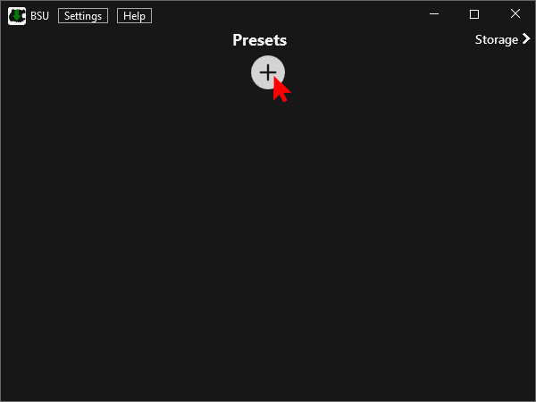
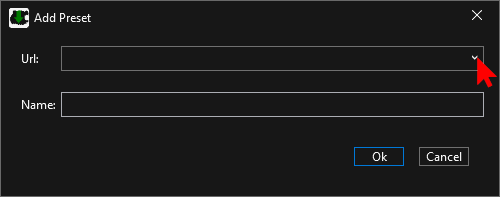
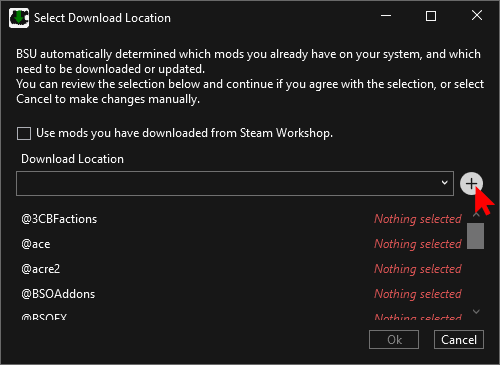
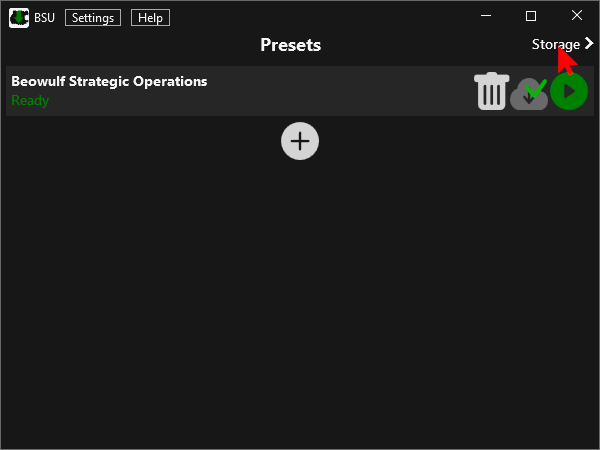
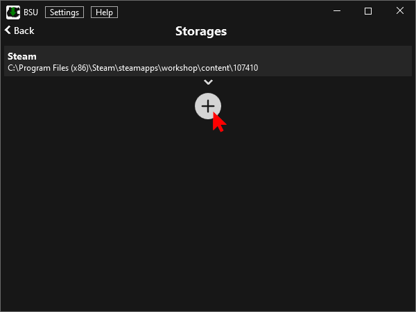
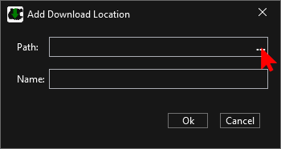
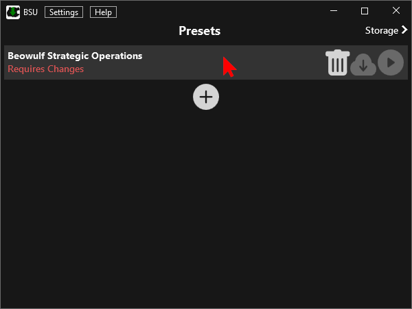
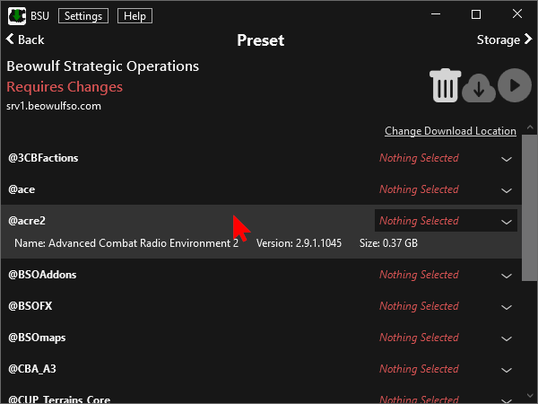
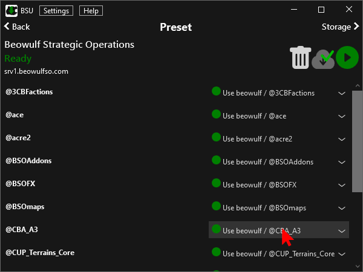

User Guide
If you are using BSU for the first time, start with the Add Preset section.
Add Preset
Add a new Preset by clicking the Plus button on the Presets page.
Choose a sync url from the dropdown, or fill in your own.
- Beowulf
http://sync.bso.ovh/server.json
Default if you DO own the Western Sahara DLC - Beowulf - WS Compat
http://sync.bso.ovh/server-vn.json
Default if you DO NOT own the Western Sahara DLC - Beowulf 'NAAAAAM
http://sync.bso.ovh/server-compat.json
Vietnam Event
You can change the name of the preset if you like.
Click Ok to continue to the storage selection dialog.
If you used the old BSU.Prototype, chances are that all mods show green, and you can press Ok and be done with the setup. You can skip the rest of this guide.
You can now select a download location from the dropdown. If there are none, you will have to create one first using the Plus button.
Refer to the next section for the details of the Add Storage dialog
Once you have added a storage, the mods should be ready to download. Click Ok to proceed.
If you are not happy with the setup, or want to customise things, click Cancel and proceed to the Make Adjustments Section.
Add Storage
You can open a storage / download location either from the Storages page in BSU or the Select Download Location dialog when you first add a preset.
|   From Storages | From Download Selection |
In the Add Storage dialog, use the 3 dots to select a path. The name will default to the folder name, but you can change it to your liking. Press Ok once you are happy with the path and name.
Make Adjustments
There are some situation in which you might want to adjust how BSU handles each mod of a preset:
- You want to use multiple storage locations
- You have different versions of mods on your drives
- BSU couldn't figure your mod setup out
- ...
Click on a preset to get to the detailed Preset page.
Here you will see a list of all the mods. You can click on a mod to see more detailed information.
Each mod has a selection on the right side. You can click on the selection or the little dropdown icon to change it.
The options are ordered by storage location. There are 3 type of options:
- Disable: The mod won't be downloaded / updated / launched
- Download here: Download the mod to this storage location. You can change the folder name.
- Existing Mod: Use this local mod. A blue dot indicates that it will need to be updated.
Unless the preset shows a green Ready, click the blue cloud icon to update your mods.